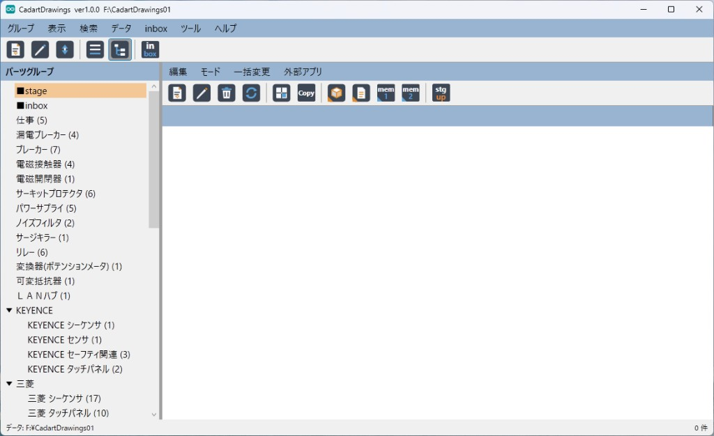

CadartDrawings 説明書
CadartDrawings は minamite のパーツ（部品・図面）カタログアプリです。グループごとにパーツを整理し、図面・資料・メモと紐づけて管理します。

メイン画面の例。上段メニューの下にメインツールバー、左がパーツグループ（ツリー。先頭に ■stage／■inbox）、右がパーツメニュー（編集／モード／一括変更／外部アプリ）とその下のパーツツールバー・一覧です。
はじめかた
- 初回起動時は 新規作成／既存を開く／キャンセル（終了）から選びます。新規作成は既定の場所（ProgramData\minamite）または指定した親の下に
CadartDrawings01〜99 を自動採番します。
- 「グループ → 新規」でパーツグループを作成します（空白区切りで最大12段・128文字）。
- 「inbox → inboxへ取込…」で図面などのファイルを取り込み、あとからグループ間移動で本グループへ移すか、「編集 → 新規（追加）」で直接登録します。
すでに起動しているときに再度開こうとすると「すでに起動しています。」と表示して終了します（二重起動はできません）。
メニュー構成
- 上段メニューの順は グループ／表示／検索／データ／inbox／ツール／ヘルプ／終了 です。
- 右ペイン上部にはパーツ用の 編集／モード／一括変更／外部アプリ があります。
- 右ペインのツールバーには、新規・修正・削除・グループ間移動・セル選択・コピー・外部アプリを開く・stage へ up があります。
グループ
- 左ペイン上部の見出し（既定「パーツグループ」）をダブルクリックすると、データセットのタイトル（最大32文字）を変更できます。タイトルバーにもタイトル・バージョン・データフォルダパスを表示します。
- 一覧のいちばん上に ■stage（閲覧リスト）、その下に ■inbox（取込待機）を表示します。
- ■inbox は修正・削除できません。最大約 50 万件まで待機できます（内部スロット）。「inbox → inboxへ取込…」でファイルを複数選択して取り込みます（拡張子制限なし。1ファイル＝1パーツ。元ファイルは削除しません）。
- ユーザーグループの CODE は 2000〜89999（画面では変更できません）。
- 「グループ → グループ順番入れ替えモードON」でドラッグ＆ドロップ並べ替えができます。ON中は左ペイン外周に枠が付き、カーソルが手の形になります。■stage と ■inbox は並べ替えできません。
- ツリー表示では、グループ名の空白区切りで階層表示します。枝（子があるノード）を選んで Space を押すと、その枝配下の全展開／全閉じを切り替えます（葉では何もしません）。実グループでない中間の枝を選ぶとパーツ一覧は空になります。
- 左ペインのリスト／ツリーは「表示」で切り替えます（終了時に記憶。初回の既定はツリー）。件数表示をオンにするとグループ名の後ろに件数を付けます（0件は出しません）。
- 左ペインを右クリックすると、グループ名での絞り込み／解除／履歴が使えます。
stage（閲覧リスト）
- パーツを選んでツールバーの stg/up（stage へ up）を押すと、■stage に参照として追加します（本体は元のグループのまま。ファイルは移動しません）。
- up してもいま見ているグループの選択と一覧はそのままなので、続けて別のパーツを up できます。
- ■stage を開くと、up したパーツの一覧です。ドラッグ＆ドロップで順番を入れ替えられます。
- ■stage 上の「削除」は stage から外すだけです（パーツ本体や図面ファイルは消しません）。
- ■stage 表示中は、新規・修正・一括変更・グループ間移動・up は使えません。
パーツの操作
- 1グループあたり最大 99999 件まで登録できます（表示例:
2000-00001）。
- 「編集 → 新規（追加）」／「修正」でパーツ情報を編集します。項目は名称・型式・メーカー・図面・資料・金額・原価・メモ１・メモ２・日付です。
- 図面／資料はダイアログからファイルを取り込めます（通常は
draw／doc、inbox グループでは図面は inbox）。メモ１・２はパスや URL などの記録のみです（ファイル取込はしません）。
- 「編集 → 削除」で登録を消します（図面ファイルは残します。セキュリティパスワードを設定しているときは確認があります）。
- 「編集 → グループ間移動」を ON にすると、一覧から左のグループへドラッグして移せます（一度に最大1000件）。inbox との間は図面ファイルも移動します。■stage へのドロップ移動はできません（stg/up を使ってください）。
- 「モード → セル選択切り替え」で、行選択とセル選択を切り替えます。「セルコピー」（Ctrl+C）で表形式（タブ区切り）をクリップボードへコピーします。
- 「一括変更」は メモ１／メモ２のみです。
- 「外部アプリ」またはツールバー／ショートカットで開きます。図面 F5／資料 F6／メモ１ F7／メモ２ F8。ファイルは関連付けアプリ、フォルダはエクスプローラー、http(s) はブラウザ、メールはメーラーです。型式・名称の web 検索（Google）もあります。
- 一覧のダブルクリックで修正します（■stage では開きません）。
 パーツ修正の例。図面／資料は「…」でファイル取込。メモ1 はファイルまたはフォルダのパスを記録するだけで取込しません。
パーツ修正の例。図面／資料は「…」でファイル取込。メモ1 はファイルまたはフォルダのパスを記録するだけで取込しません。
基本設定
「ツール → 基本設定」で次を設定します。
 基本設定の例。表示の大きさ、左ペイン（リスト／ツリー）、ツリー初期展開段、メインツールバー、件数表示、セキュリティパスワードなどを設定します。
基本設定の例。表示の大きさ、左ペイン（リスト／ツリー）、ツリー初期展開段、メインツールバー、件数表示、セキュリティパスワードなどを設定します。
- 表示の大きさ … グループ／リストを小・中・大
- 左ペイン初期表示 … リスト／ツリー
- ツリー初期展開段 … 1〜12（既定4）。起動時と表示更新のときに反映
- メインツールバーを表示 … 上段アイコンバーの表示／非表示
- 件数表示
- セキュリティパスワード … 設定すると削除・復元などの操作で確認します。空のときは確認をスキップします
検索
- 上段の「検索」で、名称・型式・メーカー・メモ１・メモ２のいずれかを含む文字で探せます。
- 検索文字に
| を入れると OR です（例: ボルト|ナット）。
- 結果は別ウィンドウで開きます（編集・外部アプリ・一括変更・セルコピーが使えます）。
データ
データフォルダ名は CadartDrawings01〜CadartDrawings99 です（番号なしの旧 CadartDrawings も開けます）。
CadartDrawings01/
├─ dataset-title.txt 任意（表示タイトル）
├─ stage.json stage リスト
├─ cadartSqlite/cadartdrawings.sqlite 暗号化データベース
├─ draw/ 通常グループの図面
├─ doc/ 資料
└─ inbox/ 取込待機（■inbox）
データベースは暗号化されますが、パスワードはアプリ内部固定のためユーザー操作は不要です。データフォルダの場所はタイトルバーに表示します。
- 「データ」メニューから、図面／資料／inbox フォルダをエクスプローラーで開けます。
- 「未使用ファイルを表示」「不在ファイルを表示」で、登録と実ファイルのずれを確認できます。未使用はゴミ箱へ移すか、指定フォルダへ退避できます。
- 「グループ内図面重複チェック」「全図面重複チェック」は、図面ファイル名と容量が一致する候補を一覧します（自動削除はしません）。
バックアップ・引っ越し・切り替え・新規作成
- 「ツール → 相手PCから取り込む…」は、相手の
CadartDrawings## フォルダまたは zip を選び、自分に無い／相手の方が新しいパーツだけ取り込みます。差分プレビュー（追加・更新・取込不可）のあと実行します。パスワード入力は不要です。同じコードで自分の方が新しい、または同じ更新日時で内容が違う場合は取込不可となり、相手側でコードを変えてから取り込み直す必要があります。
- 「ツール → バックアップを作る（コピーして保管）」は、データベースと
draw／doc／inbox／タイトル／stage をタイムスタンプ付きフォルダへコピーします。
- 「ツール → バックアップから戻す」は、現在のデータをゴミ箱へ移動してから書き戻します。実行前にバックアップしてください。
- 「ツール → 別の場所へデータを移して使う」は、新しい
CadartDrawings## へコピーして参照先を切り替えます。
- 「ツール → 場所を変える」は、すでに存在するデータフォルダを選んで参照先だけ切り替えます（コピーしません）。
- 「ツール → 新規CadartDrawingsを作成」は、空のデータフォルダを作って切り替えます。
詳細な仕様（テーブル・コード割付など）は、リポジトリの 資料/仕様書.md（開発・運用向け）を参照してください。